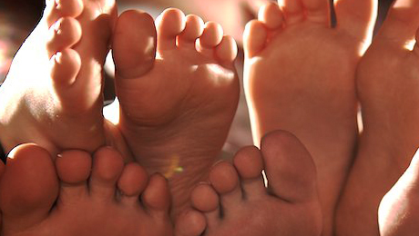

Ahoj
světe!
Noha člověka se skládá z 26 kostí. Hlezenní kloub spojuje nohu s bércem. Kostra nohy je vyklenuta do podélné a příčné klenby. Při stoji tak zátěž spočívá ideálně na obou nohách symetricky (není vyosení ani přetěžování jedné dolní končetiny na úkor druhé) a noha spočívá na podlaze třemi hlavními body: patou, bříškem 1. prstce (palce) a bříškem 5. prstce (malíku).Noha v lokomoci Při došlapu na zem se dotýká pata země jako první. Pata je proto poměrně masitá a tuhá tkáň. Došlap vyžaduje propnutí nohy v koleně, zvednutí špičky a současně vzpřímený trup člověka (prsa jdou první). Po došlapu paty se noha odvíjí po své vnější klenbě k prstcovému „vějíři“. Jakmile se kyčelní kloub ve svislici přenese před špičku nohy, dochází k zadní fázi odpichu. Tato fáze je důležitá a bývá zanedbávána tím, že trup je předkloněn vpřed, „zlomen“ v tříslech dopředu. Tím je eliminován význam lýtkového svalu coby iniciátora odpichu, dochází k přetěžování hlubokého ohybače kyčle (m. iliopsoas) a k typické postuře vystrčeného zadečku. Tato negativní reciproční dysbalance působí ochabnutí hýžďových svalů, dále tuhnou lýtkové svaly, může docházet k plochonoží a otékání nohou, neboť lýtka coby „dolní krevní pumpa“[1], nefungují adekvátně. V kotnících také při odvíjení dochází k viklavému levo-pravému kyvu nohou namísto k lineárnímu pato-špičkovému odvinutí. Pojem „trojflexní linearita“ (stejný směr kyčle, kolene a kotníku při chůzi) popsali Ida Rolf (USA) a František Véle (Pražská myoskeletální škola). Chůze je pohyb probíhající ve svislici těla jak v bočním tak v předo-zadním pohledu. Ramena při chůzi rotují proti pánvi, nohy jsou ponechávány dostatečně dlouho vzadu, což stimuluje chodidlo a lýtko k „vystřelení“ těla vpřed propnutou dolní končetinou a vějířovitou klenbou prstců. Špička nohy má být v linearitě ke směru chůze, tedy nevytočená ani ven ani dovnitř. Taková lokomoce přináší anatomickou i psychickou pohodu, předchází kloubním omezením a prospívá oběhovému a ventilačnímu systému člověka.[2]

Toto je odkaz na Gabko
Toto je text kurzívou
Toto je tlustý text
Toto je odkaz na Gabko
Toto je odkaz na wiki
Toto je odkaz na mgfitman